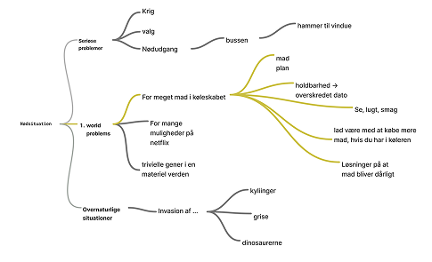
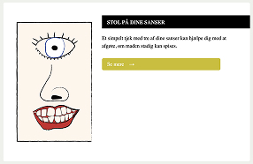
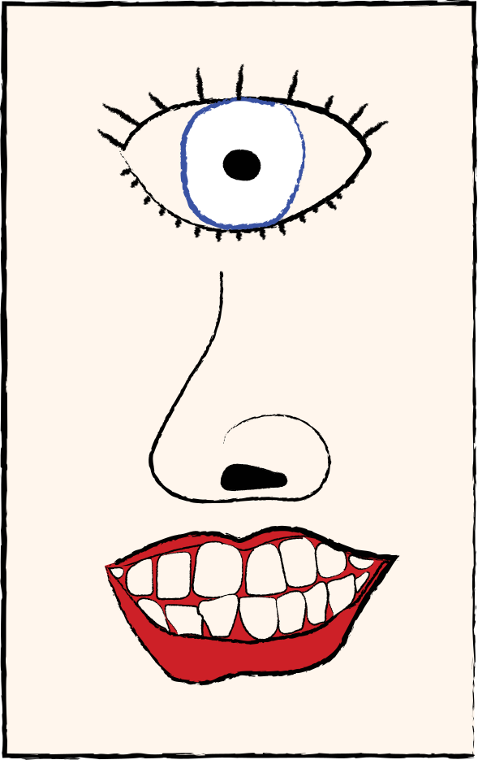
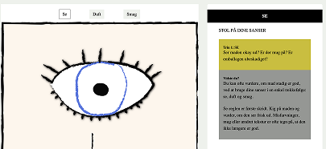
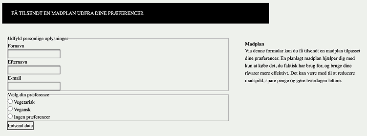
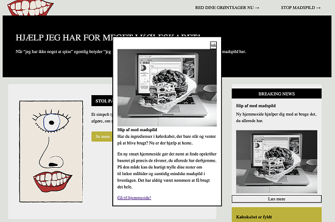

TEMA 4
GRUNDLÆGGENDE BRUGERGRÆNSEFLADEUDVIKLING
I dette tema arbejdede vi med udvikling af brugergrænseflader til et eksisterende website. Fokus var på at videreudvikle sitets design og funktionalitet ved hjælp af værktøjer som Adobe Illustrator, CSS og JavaScript.
Vi blev introduceret til Adobe Illustrator og lærte at arbejde med vektorgrafik i SVG-format, som kan anvendes direkte på websites. Derudover fik vi vores første erfaringer med JavaScript, som blev brugt til at skabe interaktive elementer og funktioner på siden. Samtidig videreudviklede vi vores færdigheder inden for CSS og arbejdede med mere avancerede metoder til styling og layout.
Opgave: Emergency site
I denne opgave skulle vi videreudvikle et såkaldt Emergency Site, hvor det grundlæggende website allerede var opbygget. Vi skulle selv vælge en nødsituation og designe sitet, så brugergrænsefladen understøttede situationens alvor og formål.
Samspil mellem design og funktionalitet
Arbejdet bestod af en række delopgaver med fokus på forskellige elementer af sitet. Her skulle vi både udvikle visuelle komponenter og implementere funktionalitet ved hjælp af CSS og JavaScript. Opgaven gav os mulighed for at eksperimentere med design, vektorgrafik og interaktive løsninger, samtidig med at vi lærte nye teknologier inden for webudvikling.
Formålet med projektet var at styrke vores forståelse af samspillet mellem design og funktionalitet samt at give os praktisk erfaring med udvikling af brugergrænseflader til web.
Emne
Jeg valgte emnet “Hjælp jeg har for meget i køleskabet.
Fokus
- Sætte fokus på madspild
- Lave lidt sjov med at det er et luksus-problem/first world problem
- Fokus på den materielle verden vi lever i

Infografik
Vi skulle starte med at lave inforgrafik i Illustrator og implementere det på vores site. Målet var at gøre illustrationerne interaktive med JavaScript.
Se, duft, smag!
Jeg udarbejdede en illustration til “se, duft, smag”-reglen, som hjælper brugeren med at vurdere, om en fødevare stadig er egnet til brug, selv efter at “bedst før”-datoen er overskredet.
I idéfasen indsamlede jeg visuel inspiration fra billeder af øjne, næser og munde. Herefter tegnede jeg de tre elementer i frihånd i Adobe Illustrator.

Implementeret infografik
Her ses illustrationen implementeret på forsiden. CTA-knappen fører brugeren videre til en underliggende side, hvor "se, duft, smag"-reglen bliver uddybet.


Interaktive elementer
Den er implementeret som en SVG.
JavaScript-koden gør SVG-grafikken interaktiv. Når brugeren klikker på øjet, næsen eller munden, opdateres sidens indhold med relevant information. Derudover fremhæves de enkelte SVG-elementer ved hjælp af CSS-klassen highlight, når brugeren holder musen over de tilhørende knapper.
Web-formular
Vi skulle efterfølgende udvikle en webformular til vores emergency site.
Jeg valgte at lave en tilmeldingsformular til en skræddersyet madplan med det formål at hjælpe brugeren med at reducere madspild gennem bedre planlægning af indkøb og måltider.

Koden
Formularen giver brugeren mulighed for at indtaste navn, e-mail og vælge en kostpræference for at modtage en madplan. HTML-koden opbygger formularens struktur med inputfelter, radio-knapper og en indsend-knap.
CSS-koden styler formularen ved at tilføje baggrundsfarver, typografi, afstand og centrering, så indholdet fremstår overskueligt og brugervenligt.
Pop-over vindue
Som en del af projektet skulle vi kode et pop-up-vindue til forsiden, der præsenterede nyheder relateret til vores emergency-site.
Til indholdet genererede jeg billeder ved hjælp af AI. Gennem forskellige prompts arbejdede jeg mig frem til et visuelt udtryk, der harmonerede med mine egne illustrationer, så designet fremstod sammenhængende og genkendeligt.
Koden
Koden opretter et interaktivt nyhedskort med et popover-vindue. Når brugeren klikker på "Læs mere", åbnes en popover med uddybende information, billeder og et link til en ekstern hjemmeside.
CSS-koden styrer popoverens størrelse, placering og udseende samt tilføjer en fade-in animation og en mørk baggrund, der fremhæver indholdet, mens popoveren er åben.
